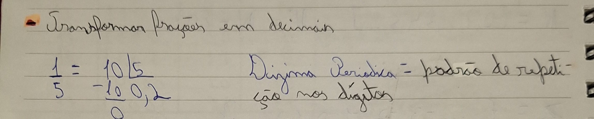
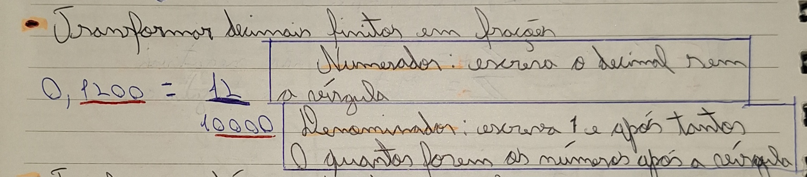
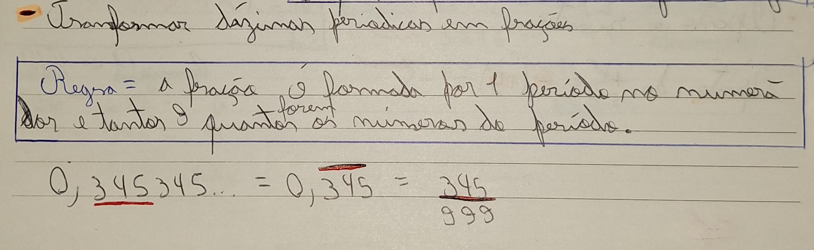
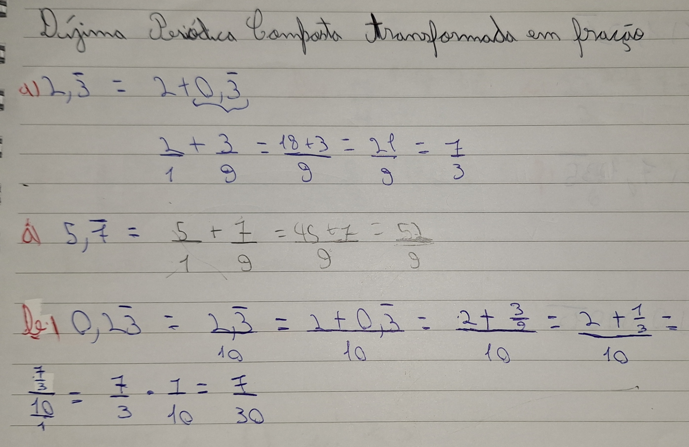

Transformações de decimais e frações
- Explicação
Esse conteúdo deveria ser uma revisão, mas para mim não foi. Essas transformações foram em sua maioria novidade para mim, porém não foi difícl de entender. Segue a explicação das transformações com fotos pois foi a forma que consegui para colocar esse conteúdo no portfólio.
- Transformação de frações em decimais

- Transformação de decimais finitos em frações

- Transformação de dízimas periódicas em frações

- Transformação de dízimas periódicas compostas em frações

Experiência Pessoal